Веб-аналитика Импорт данных из Google Analytics в Excel с помощью Analytics Edge

В прошлой статье я рассказывал о том, как настраивать визуализацию с помощью Google Таблиц, если вы столкнулись с ограничениями Google Analytics. В этом посте речь пойдет о том, как сделать то же, но уже в Excel с его безграничными возможностями для визуализации информации.
1. Как начать работу с Analytics Edge
Для настройки импорта данных из Google Analytics потребуется установить надстройку для Excel — Analytics Edge. Скачать ее можно с официального сайта разработчика. Так как надстройка бесплатная, разработчики особо не потрудились над написанием подробных обучающих материалов. Поэтому толковое описание работы данного инструмента вы не найдете даже на официальном сайте. После установки Analytics Edge в Excel у вас появится новая вкладка с одноименным названием, выглядеть она будет примерно так:
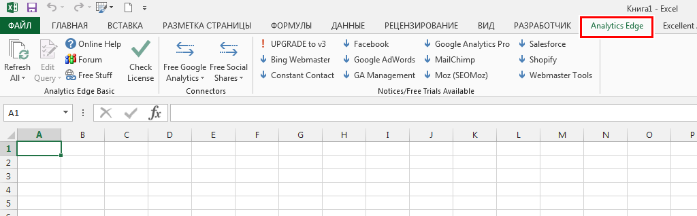
2. Активация бесплатной лицензии
2.1 Перейдите на вкладку Analytics Edge и в группе Connectors откройте меню Free Google Analytics. Далее из выпадающего меню выберите License.
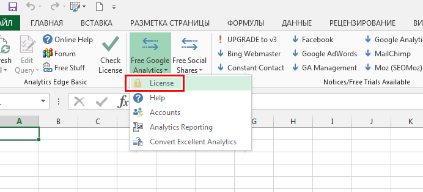
2.2. В появившемся диалоговом окне на вкладке Connector нажмите кнопку Activate Free License, после чего надстройка оповестит вас об успешной активации. Можно приступать к импорту данных.
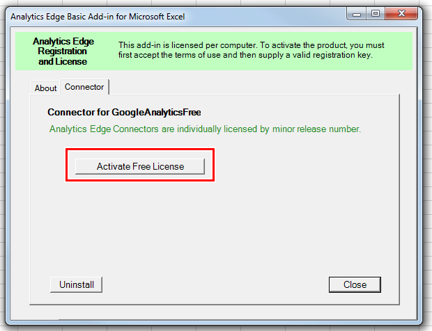
3. Теперь необходимо добавить аккаунт Google Analytics, из которого вы будете импортировать данные
3.1. Для того, чтобы добавить аккаунт, на вкладке Analytics Edge в группе Connectors откройте выпадающее меню Free Google Analytics, в нем выберите команду Accounts.
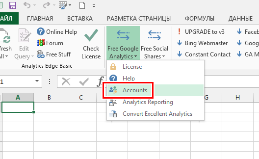
3.2. В открывшемся диалоговом окне Analytics Accounts в поле Reference name введите название аккаунта (не обязательно вводить точный логин на Gmail — можно ввести любое имя), чтобы в дальнейшем ваш аккаунт отображался в списке доступных.
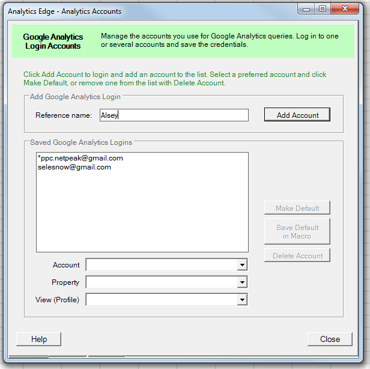
3.3. Далее следует нажать на Add Account и ввести почтовый адрес и пароль для входа в свой Google Account (к которому привязан аккаунт Google Analytics, из которого вы в дальнейшем планируете тянуть данные).
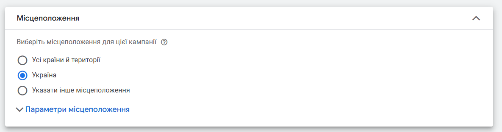
3.4. В появившемся диалоговом окне нажимаете «Принять».
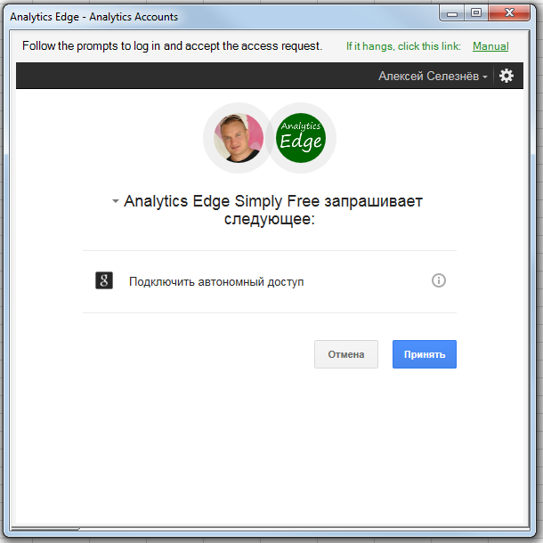
3.5. Если вы все сделали правильно, то когда вы вернетесь в первое диалоговое окно Analytics accounts, в группе Saved Google Analytics Logins появится добавленный аккаунт.
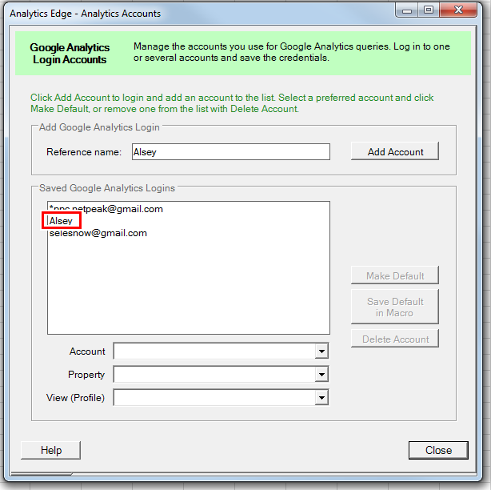
3.6. Далее вы можете указать аккаунт, ресурс и представление Google Analytics, которые будут установлены по умолчанию при выборе добавленного вами аккаунта Google.
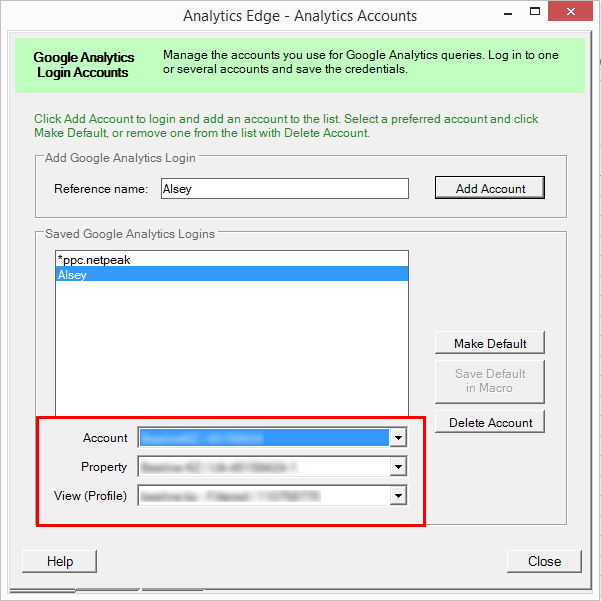
3.7. Нажимаете Close, чтобы закрыть диалоговое окно Analytics Account.
4. Настройка импорта данных из Google Analytics
4.1. На вкладке Analytics Edge в группе Connectors из выпадающего меню Free Google Analytics выбираете команду Analytics Reporting.
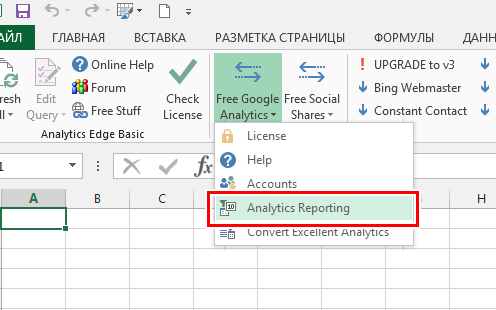
4.2. Откроется основное диалоговое окно Analytics Edge Wizard с семью основными вкладками.
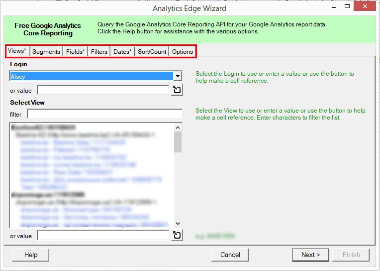
Рассмотрим все вкладки по очереди. 4.2.1 На вкладке View можно выбрать представление Google Analytics. При выборе созданного в пункте 3 аккаунта будет выбрано представление по умолчанию, которое вы установили в пункте 3.6. Если вы пропустили пункт 3.6 и не установили представления по умолчанию, то из всех связанных с вашим аккаунтом будет выбрано первое по ID представление. 4.2.2. Переходите на вкладку Segments: здесь вы можете выбрать любой расширенный сегмент, существующий в выбранном вами представлении Google Analytics. Кроме этого, есть возможность выбора между системными и пользовательскими сегментами, а также возможность создания динамического сегмента. Все системные сегменты перечислены после заголовка System Segments. В выпадающем меню Segment вы можете выбрать любой из системных сегментов. Все пользовательские сегменты находятся под выпадающим списком Segments (под заголовком System Segments). Вы можете выбрать любой из созданных вами пользовательских сегментов в Google Analytics, которые имеются в выбранном вами представлении на вкладке View.
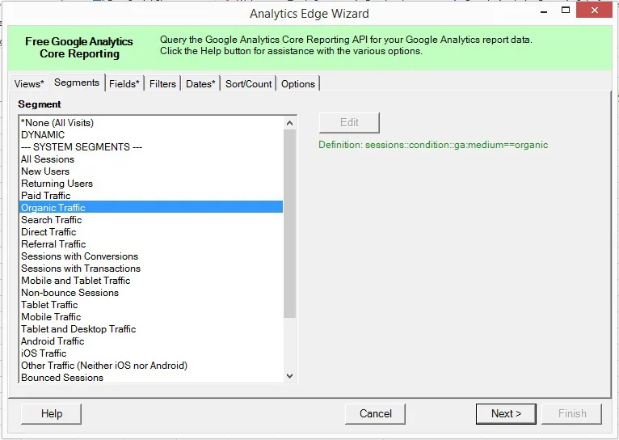
Если созданных сегментов в аккаунте Google Analytics недостаточно, вы можете создать динамический сегмент прямо в интерфейсе Analytics Edge. Для этого выберите в раскрывающемся меню Segment пункт DYNAMIC, он активирует кнопку Edit. Нажмите ее для настройки динамического сегмента.
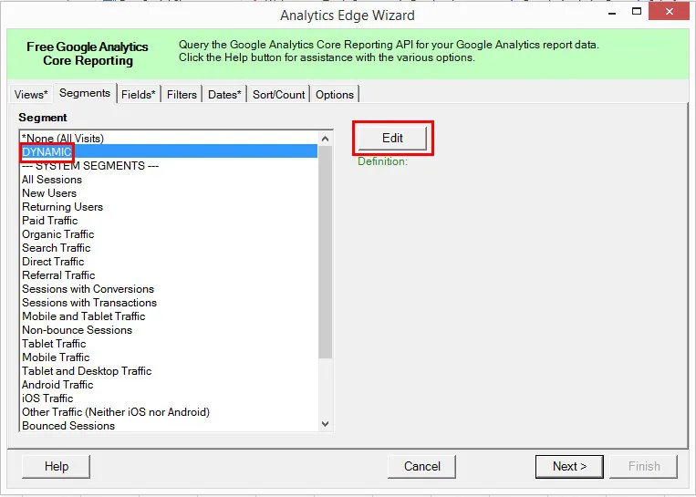
После нажатия Edit откроется диалоговое окно настройки динамического сегмента, в котором находятся еще шесть вкладок. Кратко рассмотрим каждую:
- Demographics — сегментирует трафик по демографическим признакам, таким как возраст (age), пол (gender), язык (language), место нахождения пользователя (location);
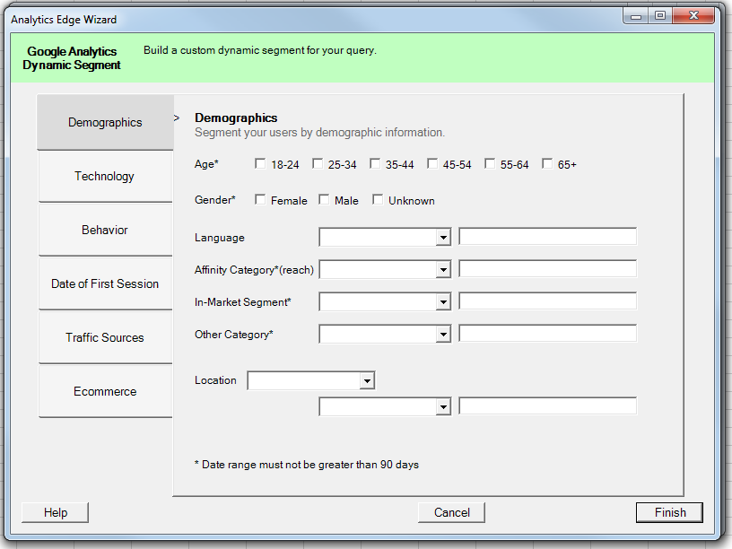
- Teсhnology — сегментирует трафик по различным технологическим критериям, например, по операционной системе пользователя (Operating System), браузеру (Browser), типу устройства (Device category);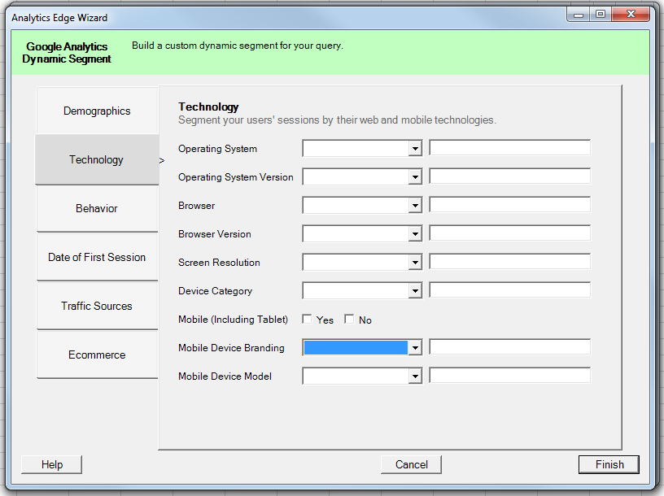
- Behavior — сортирует пользователей, совершивших определенное количество сеансов (sessions) или транзакций (transactions) на сайте. Также можно выбрать сеансы с длительностью более или менее установленного вами количества секунд (Session Duration), либо выбрать пользователей, которые были на сайте раньше или позже заданного вами количества дней тому назад (Days since last session);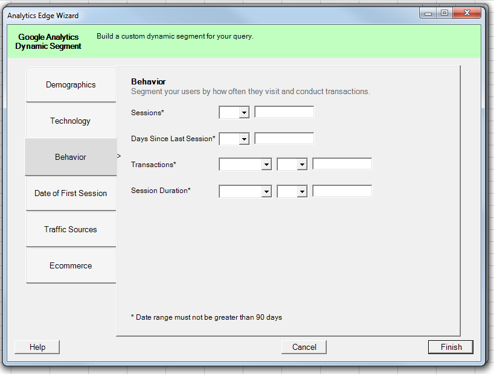
- Date of first session — отображает пользователей, впервые зашедших на сайт в выбранный вами период. К примеру, пользователей, которые впервые зашли на сайт в период с 10.01.2015 по 20.01.2015;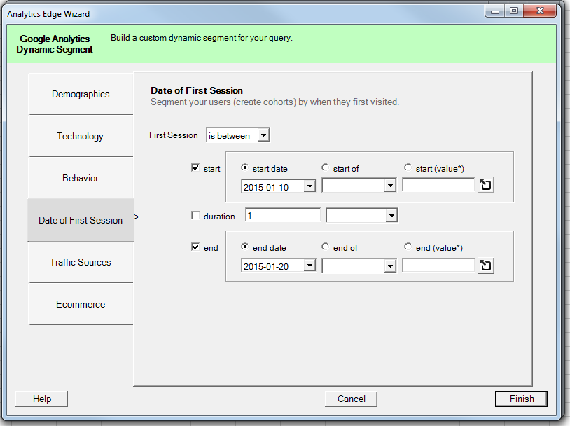
- Traffic Sources — отслеживает трафик по рекламной кампании (Campaign), каналу (Medium), источнику (Source) и ключевому слову (Keyword). Функционал данной вкладки позволяет применять фильтр на уровне сеанса (filter sesseions) либо пользователя (filter users). Разница между этими режимами заключается в следующем: в фильтрации по сеансам (и указав в качестве канала organic) вы отберете все сеансы, которые были совершены с канала organic. Если с тем же условиями (канала organic) вы выберете режим фильтрации по пользователям, то отберете все сеансы пользователей, которые хотя бы раз попали на сайт через канал organic: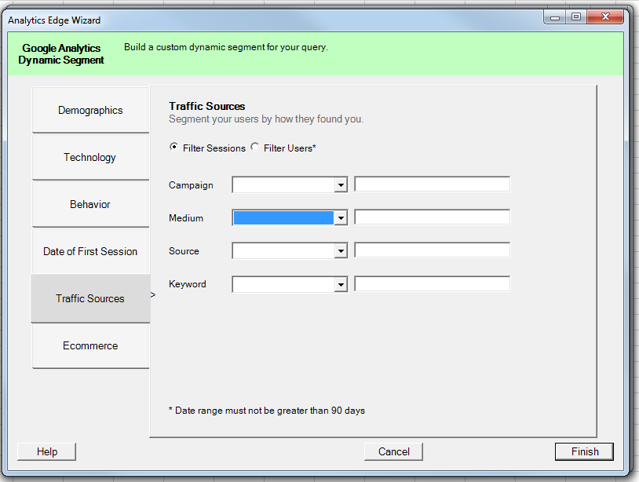
- Ecommerce — предназначена для фильтрации трафика по посетителям, совершившим транзакции. Кроме того, можно выбрать отдельную транзакцию по номеру (Transaction ID) или по определенному уровню дохода (Revenue), отфильтровать трафик с определенным количеством дней между посещения сайта и совершением транзакции (Days to Transaction). Еще можно сортировать транзакции по определенному товару (Product) или товарной категории (Product Category).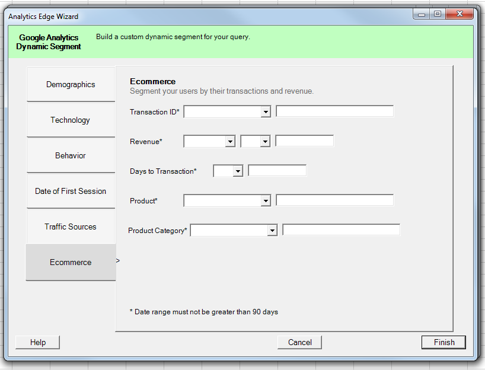
4.2.3. Вкладка Fields предназначена для выбора параметров (dimensions) и показателей (metrics). Поскольку в API Google Analytics существует ряд ограничений, то и импорт данных с помощью Analytics Edge также имеет некоторые ограничения. Что касается выбора выгружаемых полей, то можно в 1 запросе выбрать 7 параметров (dimensions) и 10 показателей (metrics). Архитектура базы данных Google Analytics также имеет ряд ограничений в различных вариантах комбинирования параметров (dimensions) и показателей (metrics). При выборе необходимых показателей и параметров часть пунктов в списке полей будет окрашено серым. Это означает, что данное поле не совместимо с выбранными вами ранее параметрами и показателями.
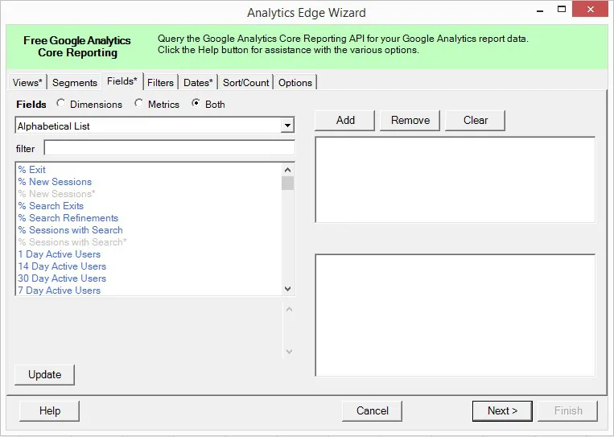
Например, если вы в качестве параметра выбрали «Product», вы не можете в качестве показателя выбрать «Clicks», так как клики происходят по объявлениям, которые закреплены за определёнными рекламными кампаниями, группами объявлений и ключевыми словами, но сделать клик по определённому продукту нельзя.
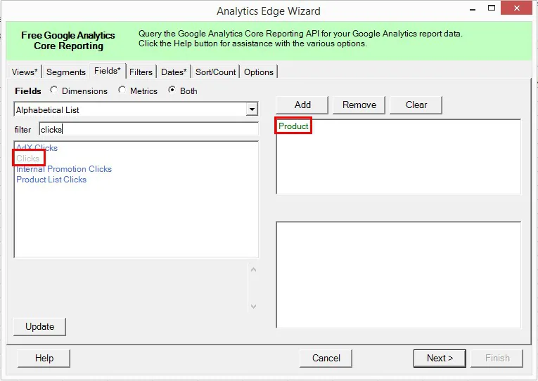
Для актуализации списка возможных полей необходимо воспользоваться кнопкой Update.
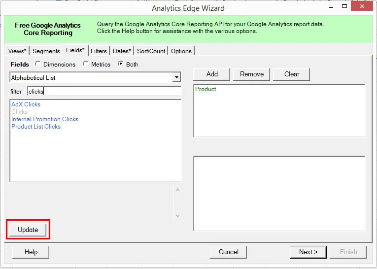
Ключевые параметры (dimensions) и показатели (metrics) я опишу в конце статьи, в справочнике соответствия названий в Google Analytics, Analytics Edge, Excellent Analytics и в справочнике параметров (dimensions) и показателей (metrics) Google Analytics. 4.2.4. Вкладка Filters по смыслу напоминает вкладку Segment. Разница между фильтрами и сегментами заключается в том, что фильтры установленные на вкладке Segment проверяют установленные вами параметры отбора на каждый сеанс, а фильтры установленные на вкладке Filters применяются к итоговым агрегированным данным. Например, фильтр «Длительность сеанса > 6000 секунд», примененный на вкладке Segments при получении отчета о количестве сеансов по дням за период 01.03.205 по 10.03.2015 выберет и покажет количество сеансов за каждый день, соответствующих условию «Длительность сеанса > 6000 секунд». Вы получите следующий результат:
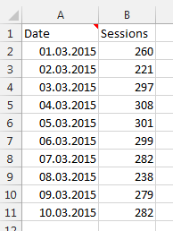
Фильтр с тем же условием «Длительность сеанса > 6000 секунд» на вкладке Filters будет работать совершенно по-другому. В этом случае фильтр изначально просчитает количество всех сеансов за день и общее количество секунд, проведенных посетителями за каждый день на сайте, после чего из отчета уберет дни, в которых общая сумма секунд проведенных на сайте посетителями менее 6000.
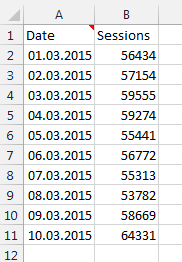
Если сравнить результаты, разница очевидна, поскольку у данных фильтров разная область применения. В случае Segments выбранные условия применяются к каждому сеансу, а в случае Filters — изначально формируется весь отчет и в итоге условия применяются к конечным данным. Еще нагляднее о работе вкладки Filters. Если в отчет к количеству сеансов добавить показатель «общая длительность сеансов» и установить значения фильтра не > 6000 а более 12 000 000, то результат будет таким:
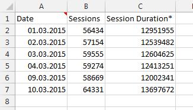
На скриншоте видно, что 5, 6, 7 марта не попало в отчет в связи с тем, что общее количество секунд, проведенных всеми посетителями на сайте за эти даты меньше 12 000 000 секунд. Напрашивается вывод: на вкладке Filters вы можете фильтровать итоговые данные, задавая любые значения по любым параметрам (dimension) и показателям (metrics). Также можно комбинировать условия, выставляя между ними различные логические зависимости и/или (and/or).
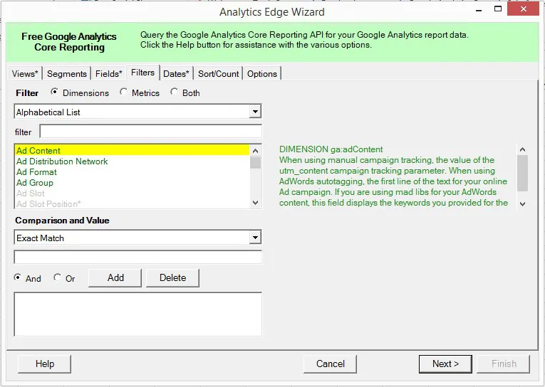
4.2.5. На вкладке Dates вы должны указать период, за который планируете импортировать данные. Существует несколько вариантов выбора периода.
- динамический (preset) — вы можете выбрать любой период, который ежедневно будет перемещаться (например, последние 30 дней (last_30_days), и при каждом обновлении отчеты будут выводится данные именно за последние 30 дней — так можно выбрать вчера (yesterday), сегодня (today), последние 7 и последние 14 дней);
- статическая начальная дата (start) — количество дней, за которые вы планируете выгрузить отчет, начиная с установленной начальной даты (duration). Здесь вы можете указать и статическую конечную дату отчета (end).
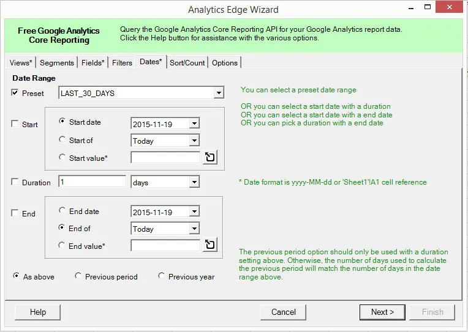
4.2.6. На вкладке Sort/Count вы можете задать параметры сортировки выводимых данных и лимитировать количество строк, выводимых в результате запроса. Для того, чтобы задать сортировку в выпадающем списке Sort by, выберите любое поле. После чего нажмите один из двух вариантов сортировки по возрастанию (Ascending), либо по убыванию (Descending). Вы можете добавить любое количество полей: сортировка итогового запроса будет осуществляться в таком же порядке, как вы укажете на вкладке Sort/Count. Чтобы лимитировать количество строк в результате запроса (очень большие запросы требуют более длительного периода обработки), вы можете указать предельное количество строк в поле MaxResults. По умолчанию установлено значение 0, что означает отсутствие лимита.
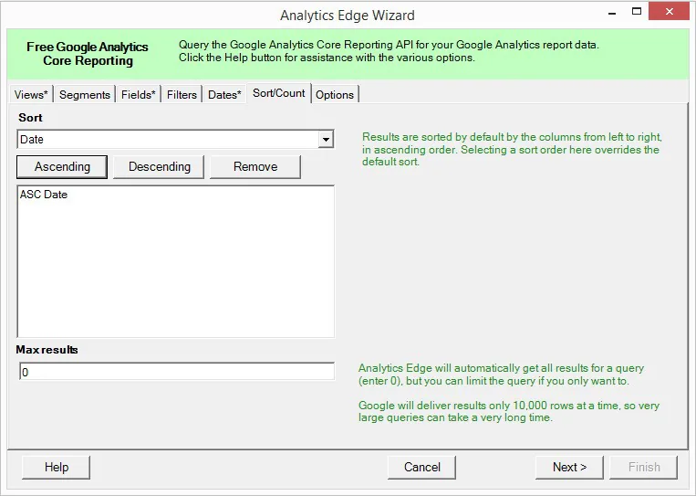
4.2.7. Вкладка Options предназначена по большей части для настройки формата передачи данных в Excel. С помощью Rates/Percent вы можете настроить отображения относительных метрик, таких как показатель отказов, в числовом, а не процентном формате. Пункт Dates решает проблему передачи данных о датах. По умолчанию Google Analytics передаёт значение даты в виде восьмизначного числа. Например, дата 01.10.2015 будет передана как 20151001. После установки переключателя в положение Excel Date, Analytics Edge будет автоматически трансформировать даты в привычный для Excel формат. Numeric dimention отвечает за параметры, которые содержат числовые элементы. Например, параметр Count of session (количество сеансов) показывает, сколько на текущий момент было совершенно сеансов определённым пользователем, и передаётся в виде числа. Но, поскольку данное поле является параметром, а не показателем, вы не сможете производить с ним никаких вычислений, оно служит для сравнительного анализа поведения пользователей в зависимости от количества совершенных ранее сеансов. Данное поле наиболее удобно использовать в текстовом, а не числовом виде. Для этого установите переключатель в положение String. С помощью Time metrics можно перевести временные метрики, такие как Session duration (длительность сеанса) из числового формата в формат времени. По умолчанию сессия с двухминутной длительностью будет импортирована в Excel в виде числа 120, что означает 120 секунд. Если вы установите переключатель в положение Days, в отчётах, загруженных с помощью Analytics Edge, сессия с длительностью две минуты будет отображаться как 00:02:00. Пункт Sampled data предназначен для уведомлений при семплировании данных, а так же для минимизации семплирования. Если вы установите флажок напротив пункта Warn if resultcontain sampled data, то получите уведомление (в случае, если ваш запрос содержит семплированные данные). После установки галочки напротив Minimize sampling, Edge будет минимизировать семплирование и разбивать ваш запрос на максимальное количество частей по времени. Если вы выгружаете данные по месяцам, для каждого месяца будет отправляться отдельный подзапрос. То же касается детализации по датам и неделям.
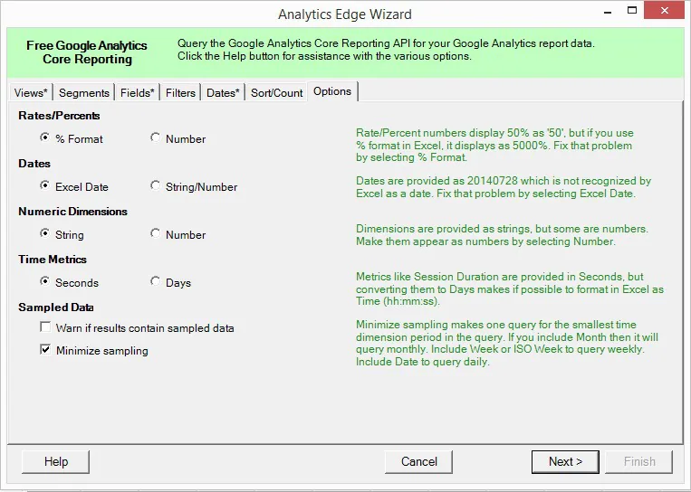
Наконец нажимете на Finish, и данные загружаются на лист Excel. Ура! Так, один раз разобравшись с функционалом надстройки Analytics Edge, вы сможете настроить визуализацию данных и использовать всю мощь инструментария Microsoft Excel. P.S.: Как и обещал — даю таблицу-справочник основных параметров и показателей Google Analytics в Analytics Edge. Справочник основных параметров
| Google Analytics | Analytics Edge | Справочник API |
|---|---|---|
| Источник | Source | ga:source |
| Канал | Medium | ga:medium |
| Глубина просмотра | Page Depth | ga:pageDepth |
| Регион | Region | ga:region |
| Город | City | ga:city |
| Длительность сеанса | Session Durations | ga:sessionDurationBucket |
| Дней с последнего сеанса | Days Sinece Last Session | ga:daysSinceLastSession |
| Тип пользователя | User Type | ga:userType |
| Тип устройства | Device Category | ga:deviceCategory |
| Число сеансов | Count of Sessions | ga:sessionCount |
| Группа объявлений | Ad Group | ga:adGroup |
| Кампания | Campaign | ga:campaign |
| Ключевое слово | Keyword | ga:keyword |
| Категория продуктов | Product Category | ga:productCategory |
| Продукт | Product | ga:productName |
Справочник основных показателей
| Google Analytics | Analytics Edge | Справочник API |
|---|---|---|
| Сеансы | Sessions | ga:sessions |
| Отказы | Bounces | ga:bounces |
| Длительность сеанса | Session Durations* | ga:sessionDuration |
| Цель:№ (достигнутые переходы к цели№) | Goal № completions | ga:goalXXCompletions |
| Достигнутые цели | Goal Сompletions | ga:goalCompletionsAll |
| Пользователи | Users | ga:users |
| Новые пользователи | New Users | ga:newUsers |
| Транзакции | Transactions | ga:transactions |
| Доход от продукта | Product Revenue | ga:itemRevenue |
| Показы | Impressions | ga:impressions |
| Клики | Clicks | ga:adClick |
| Стоимость | Cost | ga:adCost |
UPD. Создатели Analytics Edge на сайте сервиса добавили ссылку на это руководство как на официальный русскоязычный мануал.